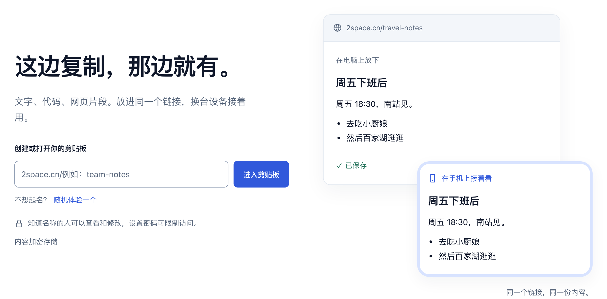
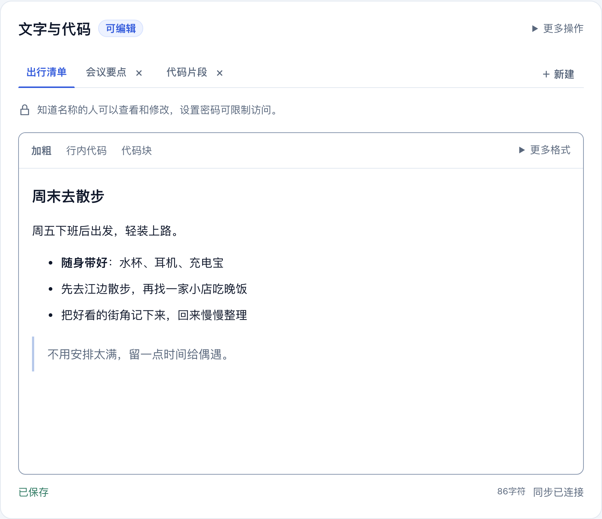
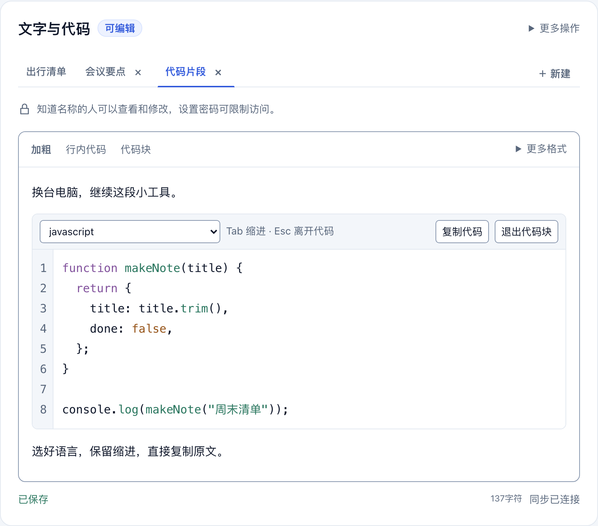
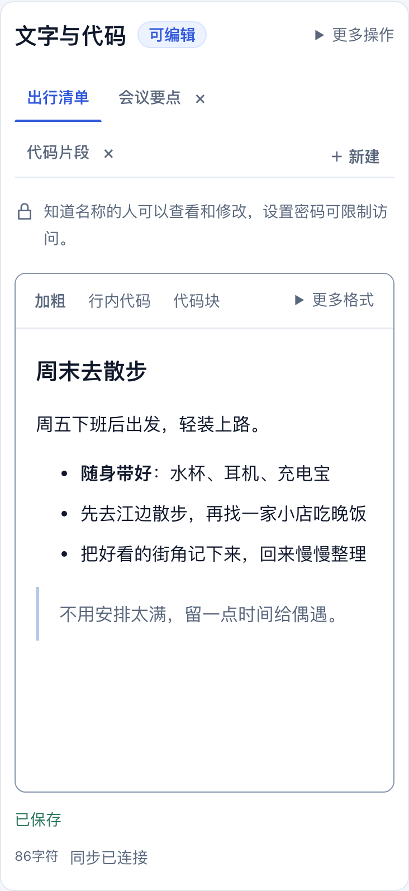

QUOTE
让一段内容， 少走几次中转 。
手机上复制了一段地址，电脑上要用；电脑里整理好一份清单，出门又想在手机上看。于是打开聊天软件，发给自己，再到另一台设备里翻出来。
这件小事，我们每天可能重复好几遍。2Space 想把它变得更直接：这边复制，那边就有。 把文字粘进网页，换台设备打开同一个空间，就能接着看、接着用。不用注册账号，也不用安装客户端。

— 打开网页，给内容找一个入口
本文看点
01
换台设备接着用
02
文字与代码
03
分享与访问
01
CONTINUE
打开 2Space，给空间取一个由字母、数字、下划线或中划线组成的名字，就能进入。懒得起名，也可以先随机体验一个。
把地址、网页摘录或临时想到的一句话放进去，等页面显示“已保存”。另一台设备打开同一个地址，内容就在那里；两边都开着时，修改也会自动更新，不必反复刷新或重新发送。
适合那些只差一个中转站的小任务：手机上发现的资料，放到电脑继续整理；电脑上写好的出行安排，带到手机边走边看。它不会自动读取系统剪贴板，需要你主动粘贴。
02
TEXT & CODE
一段内容有时不只是几行纯文字。标题、重点、列表和引用，能让一份清单读起来轻松很多。2Space 支持轻量富文本，粘贴常用格式时，不用把所有层次重新排一遍。

— 出行清单、会议要点和代码片段，可以分开存放
写代码的人，也可以把命令或函数放进代码块，选择语言，保留缩进并查看语法高亮。需要时单独复制代码原文，少一次从聊天记录里修换行的麻烦。

— 真实代码编辑区域，保留缩进并提供原文复制
一个空间最多放六个记事本，可以命名、调整顺序。出行清单、会议要点、代码片段各占一页，随手放下的内容也有自己的位置。需要留一份到本机，还能下载为文字文件。
03
SHARE
想让另一台设备打开，可以复制链接，也可以扫码。临时和朋友核对一份安排，发出同一个入口，比来回传几个不同版本省事。

— 手机上的同一份清单，换个屏幕继续阅读
普通名称空间里，知道名称的人可以查看和修改；“仅查看链接”提供的是阅读模式，不能把它当成独立的访问权限。需要限制访问时，可以为整个空间设置密码。
通过新版界面设置密码后，内容会在浏览器里加密，再保存到服务端。普通空间和密码保护空间的保护方式不同，不必把所有内容都当成同一种分享。密码忘记无法找回，也请别用它存放账号密码、证件或重要资料的唯一副本。
∞
TRY IT
用起来只要三步：打开网站，取个名字；粘贴内容，等“已保存”；换台设备打开同一个地址，继续使用。
它现在专注文字、富文本和代码，暂不传图片或任意文件。对一份临时清单、一段要带走的代码、几个待整理的想法来说，这样的轻量刚刚好。
下次准备给自己发消息前，试试先把那段文字放到这里：https://2space.cn。让内容跟着你走，也让设备之间少一点来回折腾。
我是 {{作者名}}，{{简介}}。
如果你觉得今天这篇有收获，欢迎 点赞、在看、转发 三连，我们下篇见。